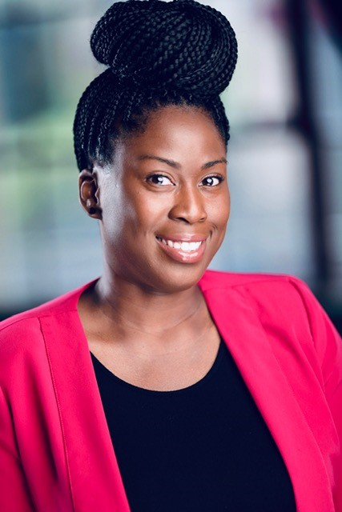

About Me
Hello welcome to my website! My name is Denise Quarles. I attended UNC-Charlotte in Charlotte, NC for undergrad and graduate school where I earned a B.A. in Computer Science and a Master of Science in Information Technology. I have over fifteen years of experience working in Information Technology. Over the course of my career in Information Technology, I have worked worked for Family Dollar Stores, Macys Systems and Technology, and Wells Fargo. My focus areas have been IT Security, PMO, and Change Management. I currently work at GE Digital where I am an engineer on the Change Management team. My current focus consists of working with teams to plan changes that are implemented with minimizing impact to the business. One of my focuses is educating teams on best practices for change management. I also produce daily reports to communicate changes to senior management.
I hope that you take time to review my portfolio. My contact information can be found on my Contact page. Once again, thank you for visiting my website.